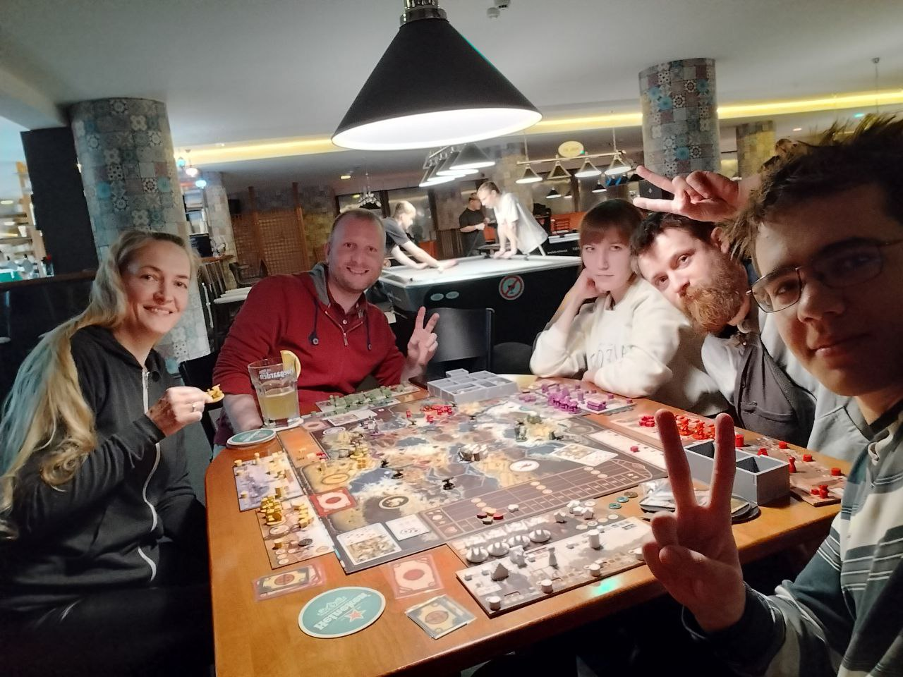

A Community of Active People
BrnoWalkers — Guided Hikes, Cave Tours & City Walks in Moravia
Pedestrian tourism, hiking, rock climbing, and exploring the best spots in Moravia with great company.
BrnoWalkers make Moravia their own — step by step, we discover the city and the region together, so Brno becomes home and fellow travelers become family.
⭐ 50+ Google reviews · 5.0"Great walks, clear guidance, and zero pressure. A perfect weekend reset with people who actually enjoy exploring Moravia."
Event Types#
About BrnoWalkers#

I'm Aliaksei — I've been personally leading these hikes for several years. I know every trail, every cave, and exactly what's worth looking up at along the way.
BrnoWalkers is an open community for people who love movement. We regularly organize walking trips around Brno and across the Czech Republic (Babi Lom, Praděd, Moravian Karst, caves, canoe river trips). It's the perfect way to reset your brain and find active friends.
Official Regulations & Rules#
- Activities are paid. The price of each event is announced in advance in the chats. Donations are also welcome.
- Transport to and from the venue, as well as additional services (food, water, equipment), are not included in the price and are the participant's own responsibility — unless explicitly stated otherwise in the event announcement.
- Routes, distance, and difficulty levels are always announced in advance in our chats.
- Mandatory requirement: comfortable sports/hiking shoes and weather-appropriate clothing.
- You can join solo, bring friends, family, or your dog — our community welcomes everyone.
📜 Full legal terms of participation →
Join the BrnoWalkers chats to never miss the next trip announcement!
Safety
Safety Briefing — Canoe River Trips#
This briefing is part of event registration. By taking part in the event, the participant confirms they have read and understood it.
Risks involved
Canoeing on a river is an outdoor activity with inherent risks: the canoe capsizing, falling into the water, getting cold, hitting obstacles, currents, and varying water depth and temperature. These risks cannot be fully eliminated even when all rules are followed.
Required equipment and rules
- A life vest is mandatory on the water at all times for every participant; for children under 15 this is a legal requirement, not just a recommendation.
- Follow the guide's instructions — especially when boarding/leaving the canoe, on more difficult sections, and during stops.
- Do not stand up in the canoe.
- No alcohol before or during the event.
- Wear suitable footwear (no flip-flops, no bare feet).
- Stay within sight of the group; report any problem to the guide immediately.
Responsibility for minors
The accompanying parent/legal guardian is responsible for direct supervision of their child throughout the event — boarding and leaving the canoe, behavior on board, and following instructions. The operator is responsible for the technical condition and safety of the rented equipment, for leading the group, and for providing this briefing.
In an emergency
Follow the guide's instructions. Guide/organizer contact: +420 702 914 842. The nearest exit points from the water will be pointed out by the guide at the start of the event.
Acknowledgment
By checking the box on the registration form, or by signing on site, the participant (or, for a minor, their parent/legal guardian) confirms they have read this briefing and understand the risks described.
FAQ
Frequently Asked Questions#
📍 Location & Time
🎒 Gear & Clothing
- Water — at least 1.5 L per person
- Snacks / sandwiches (cafés on the route are rare)
- Rain jacket or windbreaker (weather changes)
- Charged phone
- Cash or card — sometimes needed for transport
- Trekking poles (optional)
- Torch (for caves — mandatory)
- Spare socks
🏃 Fitness & Difficulty
💳 Payment & Cancellation
Cancellation on your side, 7+ days before the event: refunded minus a fixed 120 Kč admin fee (covers payment processing and the back-and-forth of cancelling — kept even on a fully valid, on-time cancellation).
Cancellation less than 7 days before, or a no-show: your spot was reserved specifically for you — no refund, including the 120 Kč fee.
Cancellation or rescheduling on our side (weather, not enough participants) — full refund, including the fee, see below.
❓ Other
Ranks & Medals
BrnoWalkers Reward System#
- Scout medal
- Public recognition in the group
- Walker medal
- Priority registration for limited events 48h before public opening — canoe, caves, expeditions
- Silver medal
- One free event per year of your choice
- Name on the website in the members section
- Gold medal
- A spot at any limited event reserved automatically — canoe, caves, expeditions
- One free event every year
- Right to propose a route or event format once a year — if a group forms, we run it
- Name and photo on the website in the "Guardians" section — visible to all new members
- Optional senior group role with event credits
1 referral who attends 2 paid events = 2 events credited to your count. Participants provide proof themselves.
Voluntary contribution
Board Game Evening#

Every Tuesday (almost weekly — confirm current schedule via contacts) we meet at Utopia Centre Koblizna at 18:00. Entry is by voluntary contribution — pay what you feel is fair via Revolut: revolut.me/aliaksj5pq. It helps cover the venue rent.
We run two tables: one in Russian, one in English. Want a table in another language? Write to us — we'll set it up.
Avalon · Scythe · Mafia · Uno · Citadels · Brass · Munchkin · …and much more
Bring your own games! We love it when players bring their own games — the more variety, the better.
Low commitment: join the announcements channel and come to the next night without long-term obligations.
To confirm the current schedule or propose a new language table — reach us via contacts.